.jpg)

日本の領土は、14125の島からなります。ユーラシア大陸の東にあり、大陸と太平洋の境目に位置しています。領土面積は約37.8万㎢で世界第60位です。国土の約70%が山岳地域であり、森林率は約67%です。
.png)
<文化遺産と近代都市>
奈良や京都では歴史を感じる風景ですが、東京や大阪、愛知などの都会では、華やかな風景ばかりです。
| 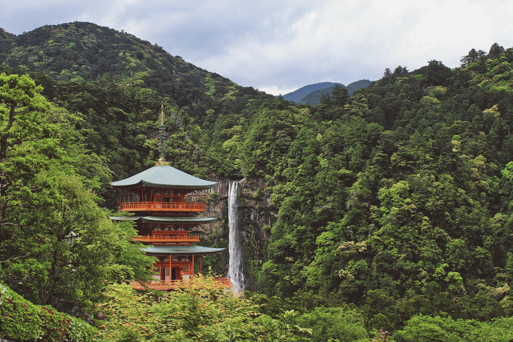 | 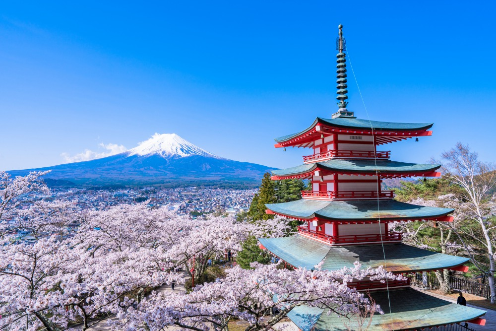 |
|
|
<気候の特徴>
①四季がはっきりしている
②日本の中でも気候がぜんぜん違う
日本は南北に長いため、北の北海道と南の沖縄県では、大きく気候が異なるのと、山脈や山地によって、太平洋側と日本海側でも、大きく気候が異なります。
③季節風
日本の夏は南東から、冬は北西から吹き、その影響のため、夏は太平洋側で雨が多く、冬は日本海側で雪が多く降りやすいです。
④梅雨
主に６月から７月上旬にかけて降り続ける長雨。オホーツク気団と小笠原気団との間につくられた梅雨前線が日本列島の南部に停滞することによりもたらされます。しかし北海道は、梅雨前線のエリアにあたらないため梅雨がありません。
⑤台風
南方海上に発生した熱帯低気圧が発達したもので、北上して日本列島を通過します。7月から10月にかけて多く、強風と豪雨をもたらすので、山くずれや、水害などの災害を発生させることが多くあります。
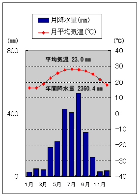主な環境問題として、気候変動、大気汚染、海洋汚染、水質汚染、土壌汚染、生物多様性の危機、資源の枯渇などとたくさんあります。
| 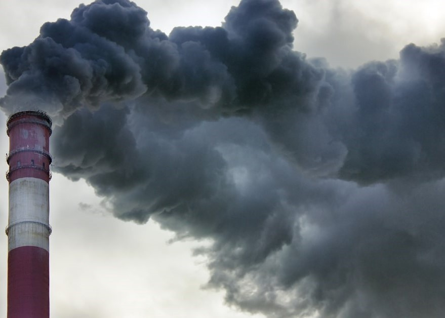 | 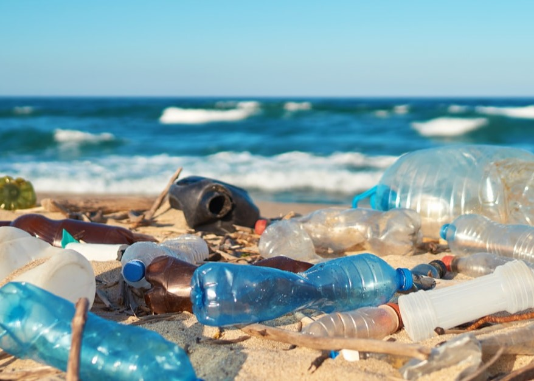 | 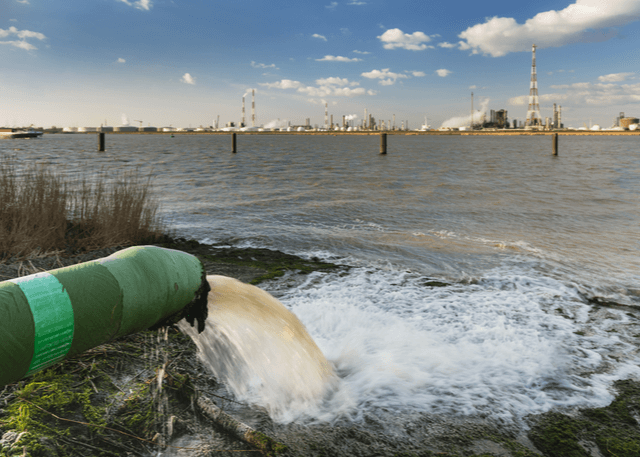 |
| 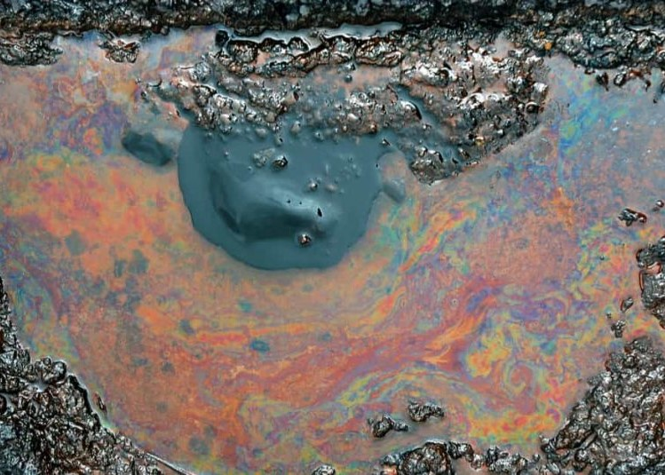 | 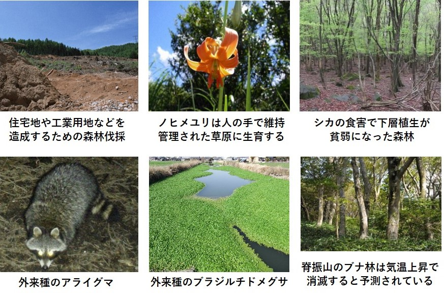 |
下の図のように人間と自然環境は密接に関わっています。なので、人間と自然が共生するために一人一人ができることを率先してやることが大切です。
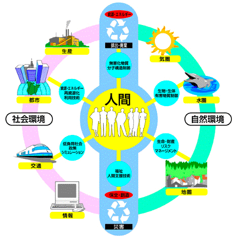中国と日本の関わり
日本は中国から米づくりや漢字、仏教、儒学、貨幣など、いろいろなものが伝わってきました。日本にとって中国は、輸出で第2位、輸入で第1位の貿易相手国です。中国は日本にとって大きな影響を及ぼしています。
| 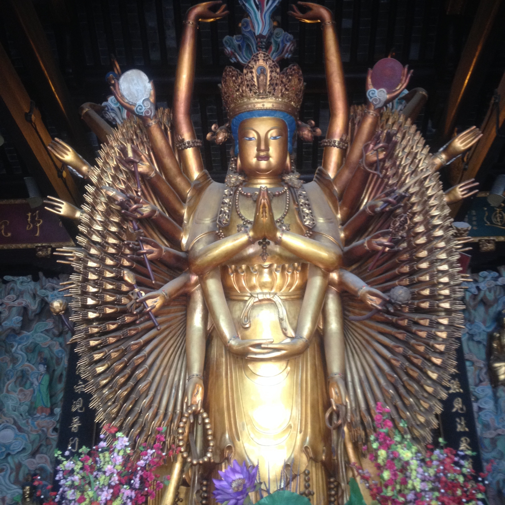 |
| 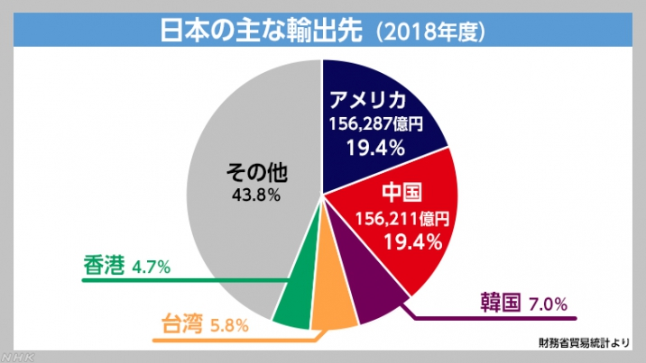 |
屋久島
屋久島は鹿児島県の下にあります。
.png)
| 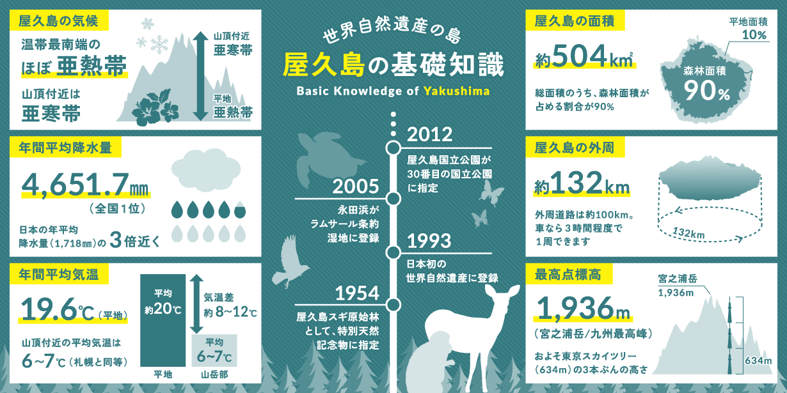 | 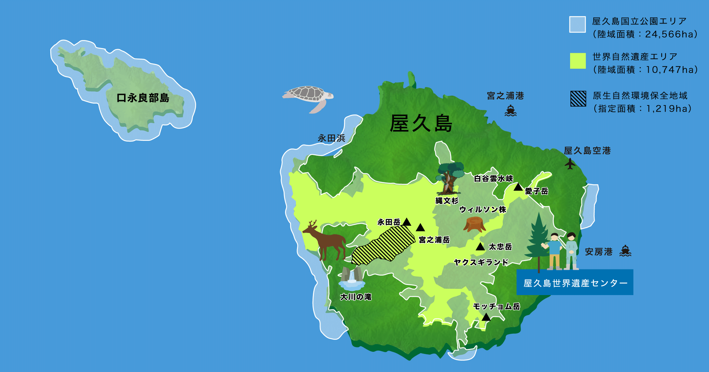 |
屋久島は自然豊かな場所として有名です。
| 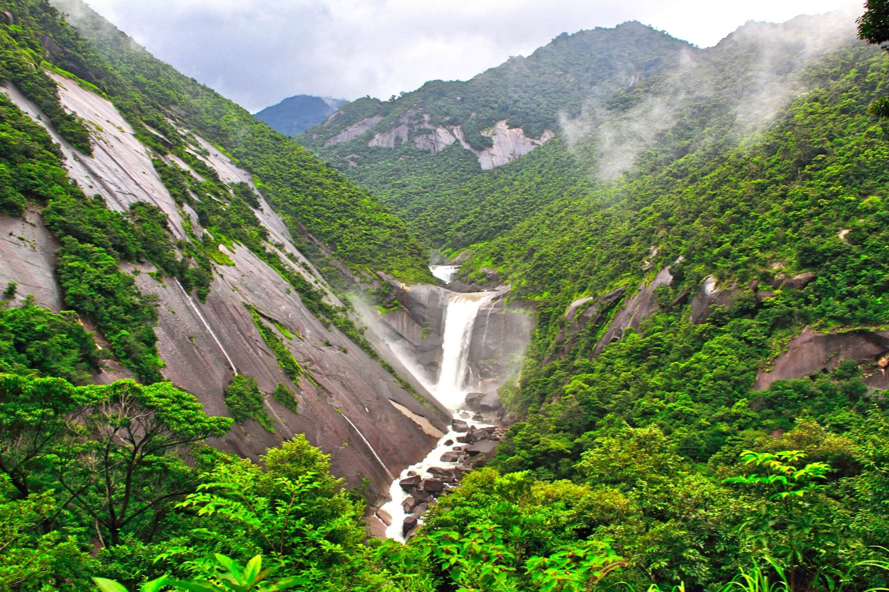 | 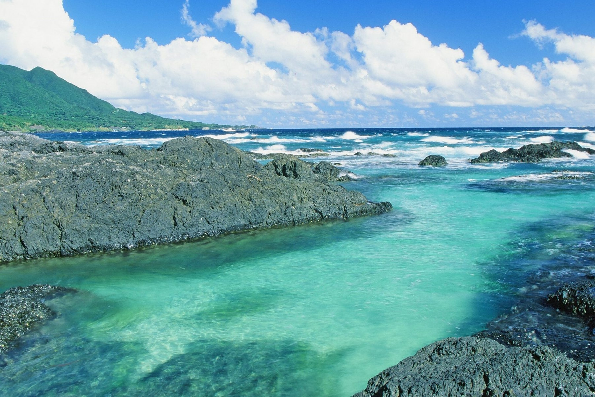 |  |
屋久島には珍しい動物がいます。
ヤクシカ ヤクサル ヤクシマヒメネズミ
| 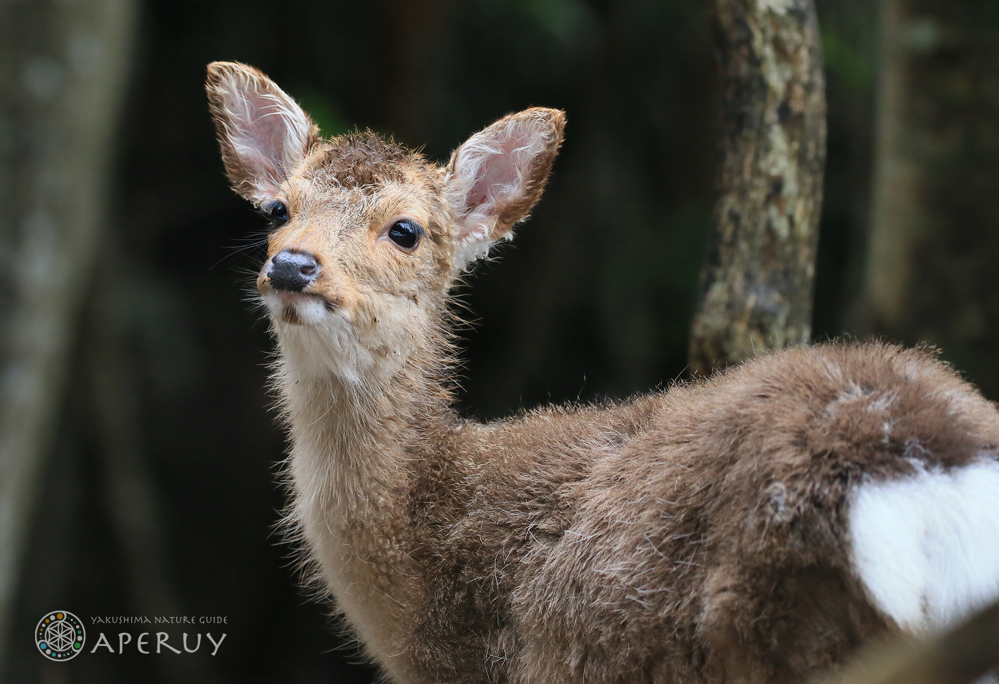 | 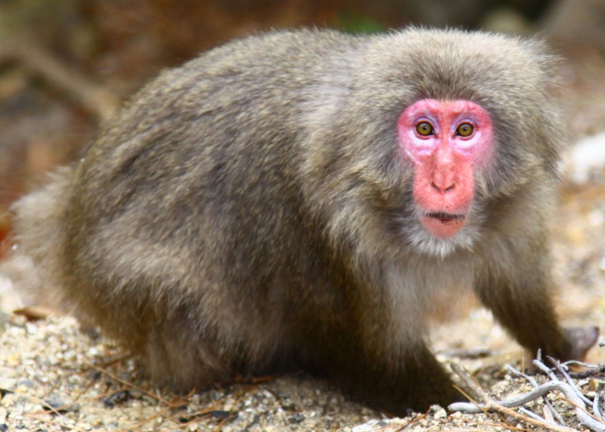 | 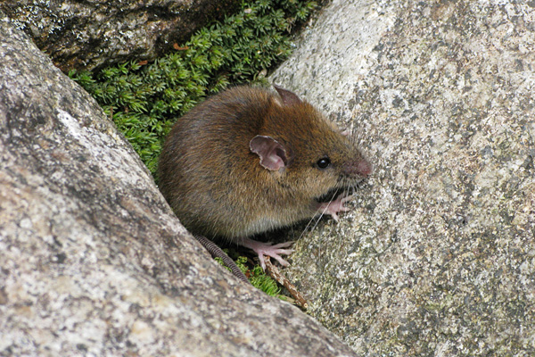 |
| 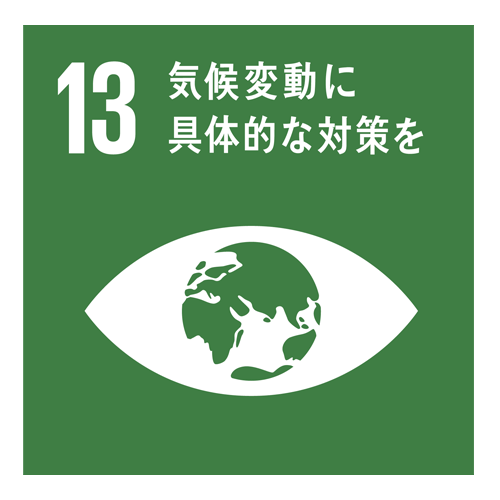 | 「世界の平均気温上昇を産業革命以前に比べて2度より十分低く保ち、1.5度に抑える努力をする」ことを目標にしています。 |
太陽光発電の需要増加に伴い、太陽光発電機器のメンテナンス事業の開発や、温室効果ガス削減に積極的に取り組んだり、環境マネジメントシステムの向上の実施など、二酸化炭素を減らす取り組みをしています。
| 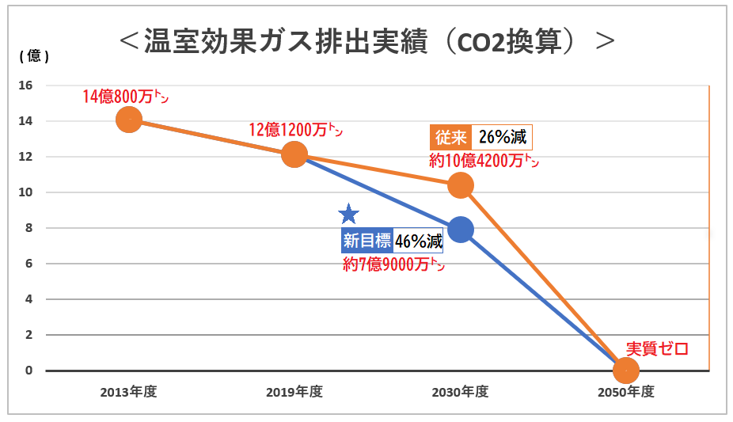 | 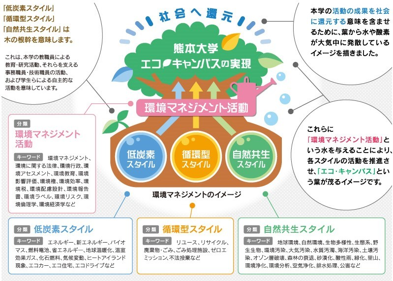 |